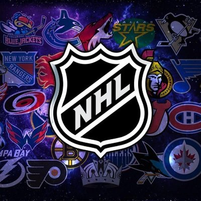

NHL Webcast| NHLWebcast - Watch Free And High Quality Streams
NHL Webcast offers free high-quality live streaming of all National Hockey League games. Our live streams are reliable, with no lag or buffering, and are available on all devices.
We offer adaptive bitrate, multiple commentary options, no geo-restrictions, and HD video and audio for the best possible viewing experience. Watch your favorite games live and never miss a moment of the action!
- NHL Webcast Schedule live
- NHL Webcast live
- NHL Webcast Streams live
- NHL Webcast Official live
Why Choose NHL Webcast?
There are many reasons why hockey fans around the world choose to use NHL Webcast to watch live streams of their favorite games. Here are just a few of the reasons why:
- Free Access: MLB Webcast provides free access to live streams of all National Hockey League games, making it easy for fans to follow their favorite teams and players without having to pay for expensive cable or satellite TV packages.
- No Geo-Restrictions: Unlike some other streaming services, MLB Webcast does not have any geo-restrictions, which means that fans from all over the world can watch their favorite games from anywhere, at any time.
- Multiple Commentary Options: MLB Webcast offers multiple commentary options for each game, so fans can choose the one that best suits their preferences. Whether you prefer to listen to the home team’s announcers, the visiting team’s announcers, or a neutral commentary team, we’ve got you covered.
- Adaptive Bitrate: MLB Webcast uses HTTP Live Streaming (HLS) technology to deliver high-quality live streams that automatically adjust their quality based on the user’s internet connection. This means that fans can enjoy smooth, uninterrupted streaming, no matter where they are or what device they are using.
- Home and Away Channels: At MLB Webcast, we offer both home and away channels for every game. This means that fans can choose to watch the game from the perspective of their favorite team, whether they’re playing at home or on the road.
- All-Device Support: MLB Webcast is designed to work on all devices, including desktops, laptops, smartphones, and tablets. Whether you’re at home, on the go, or at the ballpark, you can access MLB Webcast and watch live streams of all MLB games from anywhere.
At MLB Webcast, we are committed to providing our users with the best possible live streaming experience. With free access, no geo-restrictions, multiple commentary options, adaptive bitrate, home and away channels, and all-device support, MLB Webcast is the ultimate destination for baseball fans everywhere.